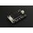

Things used in this project
Hardware components |
|

|
Nordic Semiconductor nRF52840 Development Kit |
|  | DFRobot Gravity: Offline Language Learning Voice Recognition Sensor |
| General purpose 5.0V and 3.3V fixed power supply | |
| 9V 1A Switching Wall Power Supply | |
| 5V 10A Switching Power Supply 50W LRS-50-5 | |
| SparkFun Logic Level Converter - Bi-Directional | |
| Capacitor 1000 µF | |
| Standard Terminal Block, Lever-Nuts | |

|
Jumper wires (generic) |
| Seeed Studio WS2812B Digital RGB LED Flexi-Strip 144 LED - 1 Meter | |
Software apps and online services |
|

|
Nordic Semiconductor nRF Connect SDK |

|
Microsoft VS Code |
| Digilent WaveForms | |
Story
Build2Gether Focus Area: MOBILITY IMPAIRMENTS
- Track 2: Accessible SPORTS & HOBBIES for People with Mobility Impairments.
For a person with mobility impairments to be a part of the sports game, what I can think of as a good idea is to be able to control a scoreboard wirelessly using voice commands.
The requirement for a person with mobility impairments to control a scoreboard wirelessly would be to be able to speak voice commands.
Mobility impairments vary, from people with upper body strength who cannot walk to those who are severely impaired.
A person with mobility impairments in the lower and upper body but, who can speak voice commands cannot be part of the game. But, can operate the scoreboard using voice commands.
A person with a mobility impairment range of only their lower body but, who can speak voice commands can be part of the game and also operate the scoreboard using voice commands.
The design of the scoreboard has been greatly influenced by these facts, including the limited custom voice commands of the offline voice recognition module.
The scoreboard was designed for games such as volleyball, ping pong, table hockey, and board games.
Scoreboard Layout Design:
For designing the scoreboard, I used Vectr, which is an online graphics editor.
Scoreboard features:
- Team home points.
- Team guest points.
- Team home set.
- Team guest set.
- Team home serving.
- Team guest serving.
- Scoreboard reset.
The scoreboard design dimensions are 79 cm x 65 cm. The plan is to print the scoreboard as a sticker and place it on a PVC board. Then cut out the digits and arrows using a cutter.
Voice Commands:
To accept voice commands, I am going to use the DFRobot Gravity Offline Language Learning Voice Recognition Sensor. It comes with 121 built-in commands. It is also capable of learning up to 17 custom commands.
Here are the voice commands for the scoreboard, with each corresponding command ID. The command IDs are based on DFRobot Gravity: Offline Voice Recognition Module Wiki - Command Words/Wake-up Words and ID Table .
- Team home plus one point. Command ID = 5.
- Team home minus one point. Command ID = 6.
- Team guest plus one point. Command ID = 7.
- Team guest minus one point. Command ID = 8.
- Team home plus one set. Command ID = 9.
- Team home minus one set. Command ID = 10.
- Team guest plus one set. Command ID = 11.
- Team guest minus one set. Command ID = 12.
- Team home serving. Command ID = 13.
- Team guest serving. Command ID = 14.
- Scoreboard reset. Command ID = 15
To teach the DFRobot Gravity: Offline Voice Recognition Sensor, custom commands:
- Wake up the sensor by using the wake-up command "Hello, robot".
- To start learning custom command words, use the command "Learning, command word".
- You will be prompted to speak the custom command phrase three times.
- To end learning custom command phrases, use the command "Exit, learning".
The command words need to be distinguishable. The number of words in the command phrase needs to be only up to five, as there is a time limit to speak the command phrase. Also, do not use command words that start with a built-in command word. For example, "reset" is a built-in command word. If you learn the command word "reset scoreboard", it will not be recognized as a custom command. But, instead recognized as the built-in command "reset".
Wireless Bluetooth Communication:
The wireless Bluetooth communication between the scoreboard controller and the scoreboard is based on the Bluetooth Broadcaster and Bluetooth Observer Zephyr example programs. The scoreboard controller will function as a Bluetooth Broadcaster , which will periodically broadcast advertisement data that includes device name and manufacturing data. The scoreboard will function as a Bluetooth Observer , which will regularly scan for Bluetooth devices advertising. The advertisement data from the scoreboard controller will then be used to control the scoreboard.
Scoreboard Broadcaster:
Scoreboard Broadcaster Hardware:
- nRF52840 DK .
- DFRobot Gravity: Offline Language Learning Voice Recognition Sensor .
- Fixed Dual-Voltage 5V and 3.3V Power Supply Board .
- 9V 1A Power Adapter (not shown in the picture).
The DFRobot Gravity: offline voice recognition sensor cannot be powered from nRF52840 DK VDD 3.3V. So, I used a fixed dual-voltage 5V and 3.3V power supply board to power both boards. The dual voltage power supply board 3.3V powers the DFRobot Gravity: offline voice recognition sensor. The dual voltage power supply board 5V powers the nRF52840 DK using the VIN 3–5 pin on P20 (3.0–5.0 V).
(Note: The schematic diagram was not made as the connection is simple and has been explained in detail.)
The DFRobot Gravity: offline voice recognition sensor, UART baud rate is 9600 and outputs in this format below. nRF52840 DK P0.26 is set as UART RX and receives the UART data from DFRobot Gravity: offline voice recognition sensor.
The Bluetooth program running on the scoreboard broadcaster is based on the Nordic Developer Academy Bluetooth Low Energy Fundamentals Course , Lesson 2 Exercise 2 Solution . I modified the Bluetooth program to communicate with the DFRobot Gravity: offline voice recognition sensor using the UART interface. I used the received command ID from the DFRobot Gravity: offline voice recognition module to set values for the Bluetooth advertisement manufacturing data.
At scoreboard broadcaster code, the Bluetooth advertisement manufacturing data is composed of 2 byte COMPANY_ID_CODE followed by 5 byte manufacturing data.
Manufacturing Data:
- Byte 0 and 1: COMPANY_ID_CODE.
- Byte 2: Team home points, 0-99.
- Byte 3: Team guest points, 0-99.
- Byte 4: Team home set, 0-9.
- Byte 5: Team guest set, 0-9.
- Byte 6: Team home serving = 1, Team guest serving = 2.
nRF Connect App Advertisement data:
Scoreboard Observer:
Scoreboard Observer Hardware:
- nRF52840 DK.
- 5V 10A Switching Power Supply 50W LRS-50-5 .
- WAGO 222-415 5 Way Lever Operated Terminal Connector .
- Logic Level Converter - Bi-Directional .
- WS2812B LED strip, 30 LEDs per meter .
- 1000uF 10V capacitor .
The nRF52840 DK and WS2812B LED strip are powered by a 5V 10A power supply. Terminal blocks are used to distribute 5V and GND. A 10V, 1000uF capacitor is placed between 5V and GND to provide a stable power supply to the WS2812B LED strip. The nRF52840 DK is powered at 5V using the VIN 3–5 pin on P20 (3.0–5.0 V). The I2S output for the WS2812B LED strip at P1.13 voltage is 3.3V. A bi-directional logic level converter board is used to convert the 3.3V to 5V.
(Note: The schematic diagram was not made as the connection is simple and has been explained in detail.)
WS2812B RGB LEDs Scoreboard Layout:
Starting from WS2812B RGB LEDS 0 to 87, there are a total of 88 WS2812B RGB LEDs that will be used for the scoreboard.
For the scoreboard, I am going to use 30 LEDS per meter IP65, WS2812B RGB LED strip. See, picture below for reference.
Each color of the WS2812B RGB LED consumes 20 mA at full brightness. If all WS2812B RGB LEDs are on at full brightness that is a total of 60 mA current consumption. For the scoreboard, I am going to use WS2812B red LED only at full brightness. So, each WS2812B RGB LED on the scoreboard will consume 20 mA.
Total Scoreboard WS2812B RGB LEDs Current Consumption:
20 mA x 88 WS2812B RGB LEDs = 1.76 Amps for red LED on only.
1.76 Amp x 3 = 5.28 Amps for all LEDs on.
To power the scoreboard, including the 88 WS2812B RGB LEDs, I am going to use a 5V 10A power supply.
Scoreboard Build:
I sent the scoreboard design to a sign maker to have it printed and placed on a PVC sintra board.
Then using a cutter, I cut the outline of the digits and arrows. It would have been easier to do this using a CNC machine.
Using a pencil I drew the outline of the digits and arrows to an illustration board. Then, I placed the WS2182B LEDs on it.
I wired the WS2812B LEDs.
nRF52840 DK LED Strip Test:
I used the led strip example program and modified it to use I2S interface. The original led strip build configuration for the nRF52840 DK which uses SPI interface has issues. I also found out that the WS2812B communication can be affected by solder paste and dirt. I cleaned the solder paste and dirt with alcohol and a brush. So, it took me several days to make this work.
Voice Controlled Scoreboard WS2812B LEDS First Test.
Styrofoam Board Middle Layer :
I used a one-inch thick styrofoam board to add spacing between the base board WS2812B LED strip and the front board. The space will ensure that the WS2812B red LED light will spread throughout the space. Also, the white color of the styrofoam board will reflect the WS2812B red LED light across the space.
Placing White Acrylic Plastic Board:
I used super glue to place white acrylic plastic board at the back of the front board. The white acrylic plastic board will diffuse the red light coming from WS2812B LEDs.
Final Scoreboard Assembly:
I used double sided foam tape to bind the base board, styrofoam board and front board. There has been lots of cutting using metal ruler and cutter. It would have been better to have this done using CNC machine or laser machine.
Above are the scoreboard broadcaster and scoreboard observer. The scoreboard observer is connected to the scoreboard. Visually, the digits and arrows light up in red color. However, it appears orange in pictures and videos.
Project Demo: